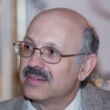
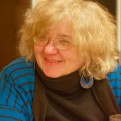

About √mathroots
√mathroots is a 14-day summer program at MIT hosted by PRIMES for promising high school students from underrepresented backgrounds or underserved communities who are interested in exploring creative topics in mathematics. The 2016 √mathroots program will be hosted at MIT from June 19 to July 3, 2016.


The inaugural √mathroots program invited 20 students from across the United States to spend two weeks at MIT.
Media coverage:
- A feature article on the MIT Homepage
- An article in MIT News
- Article in Notices of the AMS
Mission
The goal of √mathroots is to increase diversity in the mathematical community by helping strong students from underrepresented backgrounds develop their interest in mathematics and to set them on a path toward pursuing a math-based major in college.
Founded in 2015, √mathroots was inspired by the PAMO 2012 pilot project, documented in this video by the American Association for the Advancement of Science. It is hosted at MIT by the PRIMES program, and led by MIT faculty, staff, and students with a special interest and background in creative and competitive mathematics.
Academics: Learn by doing
√mathroots is a 14-day summer program hosted by MIT PRIMES for promising high school students from underrepresented backgrounds or underserved communities who are interested in exploring creative topics in mathematics. Students will discover new mathematical ideas and learn problem solving skills through a series of classes, group activities, and invited lectures led by a team of instructors with diverse experiences teaching both research and competition math.


The program features:
- Creative problem solving outside the standard curriculum
- Exposure to beautiful yet accessible ideas in mathematics
- Introduction to techniques and meaning of mathematical proof
- An academic and cultural community of like-minded peers, mentors, and instructors
Let’s play a game, you and I:
We take turns writing a number from 1, 2, 3, 4, 5, 6, 7, 8 on the board.
Once 1000 numbers have been written on the board, the game ends. You win if the sum of the numbers on the board is divisible by 9, otherwise I win.
You can choose whether to go first or second. How can you win the game? What if we can only write numbers from 1, 2, 3, 4, 5, 6?
If learning how to win this game appeals to you, √mathroots may be for you!
Residential: Join a community of excellence
√mathroots is a residential program hosted on the MIT campus. Students will live in a dormitory under the supervision of Residential Counselors, MIT undergraduate and graduate students, who will oversee their health and well-being. Room, board and meals are included for all students admitted to the program.


When students are not studying fun math, they will explore the MIT campus, visit other Boston area college and universities, attend interesting lectures about STEM careers, play soccer, or relax along with friends along the Charles River.
A typical day at √mathroots:
- 7:30am-8:45am: Breakfast
- 9:00am-10:20am: SET game
- 10:30am-12:30pm: Writing & Quiz Review
- 12:30pm-2:30pm: Lunch & Free Time
- 2:30pm-3:50pm: Counting
- 4:00pm-5:30pm: Problem Session
- 5:45pm-7:00pm: Dinner
- 7:00pm-9:00pm: Design Workshop (optional)
- 7:00pm-10:00pm: Recreational math/homework/group projects
- 10:00pm-11:00pm: Check In with RCs
- 11:00pm: Lights Out
People
Pavel Etingof
Faculty Advisor
Pavel Etingof is Professor of Mathematics in the Mathematics Department at MIT. Pavel received his Ph.D. in mathematics from Yale University. Pavel’s research interests are noncommutative algebra, representation theory, and mathematical physics. Pavel led mathematics research programs for high school students at the Clay Mathematics Research Academy, the Research Science Institute (RSI), and SPUR at MIT. He co-founded MIT PRIMES program and has served as its Chief Research Advisor since 2010. Pavel’s students have won multiple top awards at national science competitions for high school students.
When Pavel isn’t doing math, he enjoys mycology and can be found identifying, collecting, and cooking mushrooms for fun(gi).
Slava Gerovitch
Academic Director
Slava Gerovitch is the Director of Research and Reading Programs in the Mathematics Department at MIT. He co-founded MIT PRIMES program in 2010 and directed RSI and SPUR programs since 2012, and DRP and UROP+ programs since 2014. His research interests include social and cultural history of mathematics, cybernetics, astronautics, and computing. His current research project is on the culture of abstract algebra in the second half of the twentieth century. Slava holds two doctoral degrees, in history and social study of science and technology from MIT and in philosophy of science from the Russian Academy of Sciences.
He has taught at MIT since 1999, but when nobody is watching, writes poetry!
Yi Sun
Academic Coordinator

Yi Sun is a fourth year Ph.D. student in mathematics at MIT. Yi earned his B.A. in mathematics and economics at Harvard and M.A. in mathematics from the University of Cambridge as a Churchill Scholar. His research interests are in representation theory and integrable systems, and their applications to probability and random matrices. Yi represented the United States at the International Mathematics Olympiad and has taught at olympiad camps for the US, UK, and Saudi Arabian teams.
In his free time, he enjoys lifting weights with the MIT powerlifting club.
Tanya Khovanova
Head Mentor
Tanya Khovanova is a Lecturer at MIT and a freelance mathematician. She received her Ph.D. in Mathematics from the Moscow State University. Her current interests lie in recreational mathematics including puzzles, magic tricks, combinatorics, number theory, geometry, and probability theory. Her website is located at tanyakhovanova.com, her highly popular math blog at blog.tanyakhovanova.com and her Number Gossip website at numbergossip.com.
Tanya works with gifted children in a variety of settings. At the AMSA Charter School in Massachusetts, she coaches the math competition team. She also mentors and supervises high school students who want to do research in mathematics. She works with the two most successful programs that focus on helping kids do research: RSI and MIT PRIMES.
When Tanya is not thinking about mathematics or puzzles, she enjoys dancing. Actually, sometimes she thinks about math while dancing – and about dancing while solving problems.
Quinton McArthur
Program Director
Quinton McArthur is the Director of Diversity & Targeted Outreach and Associate Director of Admissions at MIT. He is an expert in the pathways of high-achieving Black & Latino high school students, particularly in the STEM fields. Prior to his time at MIT, Quinton was a graduate student at the University of Maryland at College Park where he served as a member of Dr. Sharon Fries-Britt’s research team collecting data on high achievers in the National Society of Black Physicists (NSBP). Quinton holds a Masters degree in Education Policy & Higher Education from the University of Maryland, College Park, and a bachelor’s degree from Morehouse College.
When Quinton is not reading thousands of applications, you can find him on a tropical island trying to catch waves and improve his surfing skills.